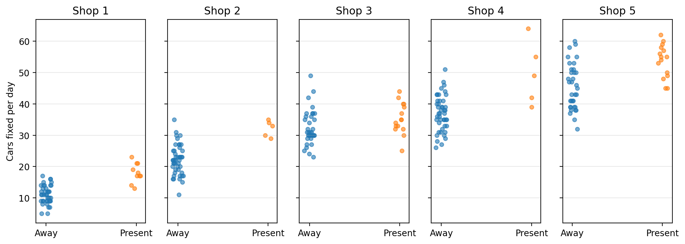
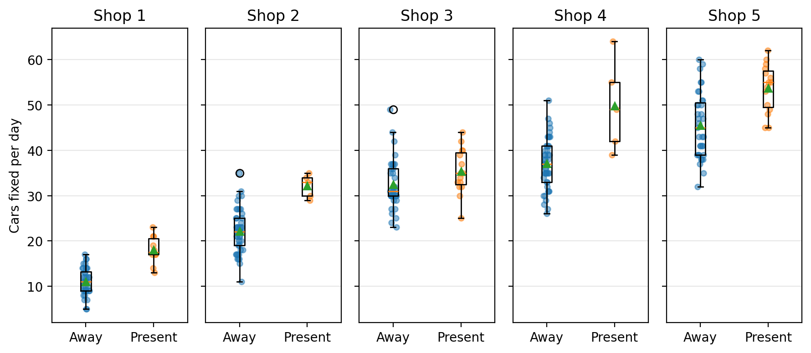
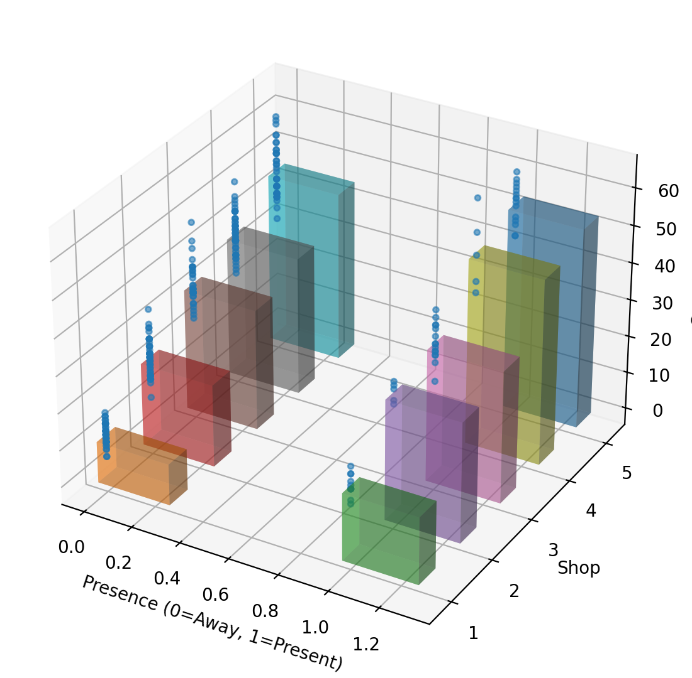
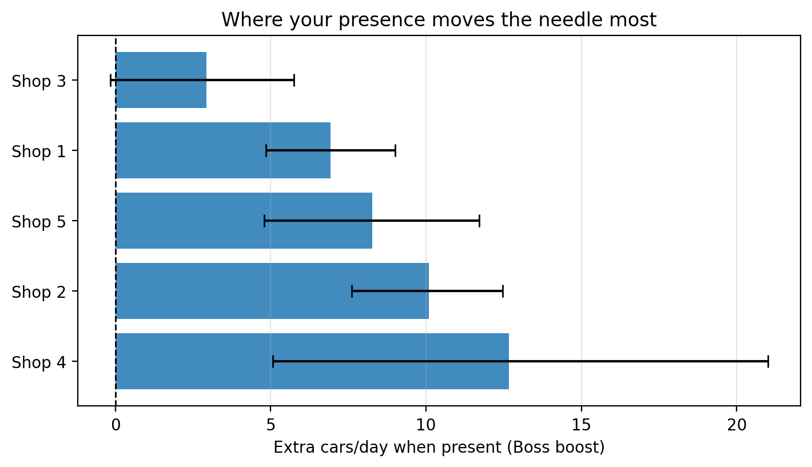
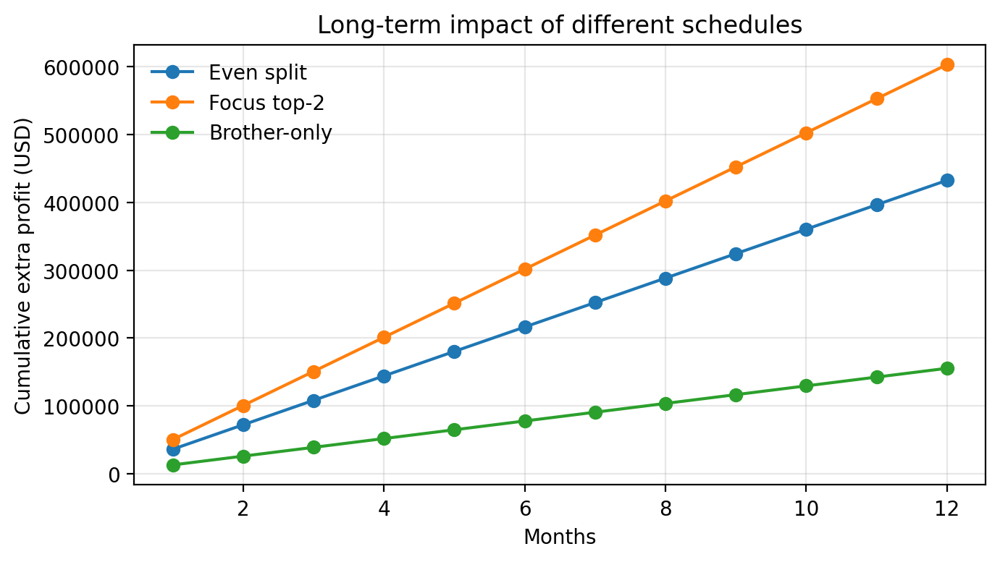

| observation | shopID | boss | carsFixed | bossLabel | |
|---|---|---|---|---|---|
| 0 | 1 | 1 | 0 | 8 | Away |
| 1 | 2 | 2 | 0 | 22 | Away |
| 2 | 3 | 3 | 0 | 32 | Away |
| 3 | 4 | 4 | 1 | 64 | Present |
| 4 | 5 | 5 | 0 | 53 | Away |
| 5 | 6 | 1 | 1 | 21 | Present |
| 6 | 7 | 2 | 0 | 20 | Away |
| 7 | 8 | 3 | 0 | 42 | Away |
| 8 | 9 | 4 | 0 | 31 | Away |
| 9 | 10 | 5 | 0 | 55 | Away |
Patrick’s Auto Shops – Decision Brief
Using your daily shop data to design your weekly schedule
1 Snapshot: What you should do
Patrick, here is the short version your data supports:
- Your presence helps some shops more than others.
- A small set of shops get a big, repeatable jump when you show up.
- Other shops tick along almost the same whether you are there or not.
A simple, data-backed plan is:
- Spend most of your week in the two shops where your presence adds the most cars per day.
- Visit the other shops (including your brother’s) only for specific reasons: training, big repairs, morale.
The rest of this brief explains:
- What your daily data actually look like across shops.
- How much you help each shop and how certain we are.
- What different schedules mean in dollars per month.
- A concrete weekly schedule you can follow.
2 What the data show
Each row in carsFixed.csv is one shop-day:
- which shop it was,
- whether you were away or present, and
- how many cars were fixed.
| shopID | bossLabel | count | mean | std | q25 | q75 | |
|---|---|---|---|---|---|---|---|
| 0 | 1 | Away | 40 | 11.05 | 2.93 | 9.0 | 13.25 |
| 1 | 1 | Present | 10 | 18.00 | 3.13 | 17.0 | 20.50 |
| 2 | 2 | Away | 45 | 22.13 | 4.82 | 19.0 | 25.00 |
| 3 | 2 | Present | 5 | 32.20 | 2.59 | 30.0 | 34.00 |
| 4 | 3 | Away | 35 | 32.46 | 5.59 | 30.0 | 36.00 |
| 5 | 3 | Present | 15 | 35.40 | 5.00 | 32.5 | 39.50 |
| 6 | 4 | Away | 45 | 37.02 | 5.61 | 33.0 | 41.00 |
| 7 | 4 | Present | 5 | 49.80 | 10.08 | 42.0 | 55.00 |
| 8 | 5 | Away | 35 | 45.51 | 7.24 | 39.0 | 50.50 |
| 9 | 5 | Present | 15 | 53.73 | 5.31 | 49.5 | 57.50 |
2.1 All shop-days in one view
This figure shows every recorded day in the data, colored by your presence and arranged by shop.

2.2 Distribution comparison by shop (box + jitter, not violins)
Here we show the spread of productivity at each shop with and without you, using boxplots plus jittered points (no violin shapes).

2.3 3D view: shop × presence × cars
To give you a different angle on the same data, this 3D plot summarizes the average cars per day for each shop and presence combination.

3 How much do you help each shop?
3.1 “Boss boost” table
We define:
Boss boost = mean cars/day when you are Present − mean cars/day when you are Away.
| bossLabel | shopID | Mean (Away) | Mean (Present) | Boss boost (Δ cars/day) |
|---|---|---|---|---|
| 0 | 4 | 37.02 | 49.80 | 12.78 |
| 1 | 2 | 22.13 | 32.20 | 10.07 |
| 2 | 5 | 45.51 | 53.73 | 8.22 |
| 3 | 1 | 11.05 | 18.00 | 6.95 |
| 4 | 3 | 32.46 | 35.40 | 2.94 |
3.2 Boss boost as a horizontal bar chart (with CIs)
This figure shows where your time creates the most extra cars per day, with uncertainty bars when we can estimate them.

4 How confident can you be?
| shopID | effect_mean | ci_lower | ci_upper | |
|---|---|---|---|---|
| 0 | 1 | 6.99 | 4.95 | 9.03 |
| 1 | 2 | 10.08 | 7.71 | 12.49 |
| 2 | 3 | 2.93 | -0.23 | 5.87 |
| 3 | 4 | 12.67 | 4.78 | 20.91 |
| 4 | 5 | 8.26 | 4.73 | 11.68 |
In plain language:
- If a shop’s entire interval is above 0, you almost certainly help there.
- If an interval overlaps 0, the signal is weaker; that shop is lower priority until more data accumulate.
- These intervals are based on only 250 days of data, so the exact numbers may shift as you collect more history.
We are assuming that the next few months will look roughly like these 250 days and that the profit per car stays about the same. If those assumptions change (for example, new staff, price changes, or a big shift in demand), the boss boosts and profit projections will also change.
5 What different schedules mean in money
Assume:
- $200 profit per car, and
- 22 working days per month.
We compare three simple schedules:
- Even split – equal time at all shops.
- Focus top-2 – all your time at the two highest-boost shops.
- Brother-only – all your time at your brother’s shop (shop 3 if it exists; otherwise the first shop).

5.1 12‑month projection
Here we project the same three strategies over 12 months, assuming the pattern continues.

6 Recommended weekly plan (pulling it together)
Based on the boss-boost rankings and CIs:
- Spend roughly half of your days at the highest‑boost shop.
- Spend the other half at the second‑highest‑boost shop. One simple pattern is Mon–Wed at the top shop and Thu–Fri at the second.
- Visit other shops, including your brother’s, only when there is a clear reason (new staff, big jobs, problems).
Re-run this brief every few months:
- If the ranking of shops changes, rotate your schedule.
- Keep logging data so the recommendations stay current.
7 Appendix — full summary table
| shopID | bossLabel | count | mean | std | q25 | q75 | |
|---|---|---|---|---|---|---|---|
| 0 | 1 | Away | 40 | 11.05 | 2.93 | 9.0 | 13.25 |
| 1 | 1 | Present | 10 | 18.00 | 3.13 | 17.0 | 20.50 |
| 2 | 2 | Away | 45 | 22.13 | 4.82 | 19.0 | 25.00 |
| 3 | 2 | Present | 5 | 32.20 | 2.59 | 30.0 | 34.00 |
| 4 | 3 | Away | 35 | 32.46 | 5.59 | 30.0 | 36.00 |
| 5 | 3 | Present | 15 | 35.40 | 5.00 | 32.5 | 39.50 |
| 6 | 4 | Away | 45 | 37.02 | 5.61 | 33.0 | 41.00 |
| 7 | 4 | Present | 5 | 49.80 | 10.08 | 42.0 | 55.00 |
| 8 | 5 | Away | 35 | 45.51 | 7.24 | 39.0 | 50.50 |
| 9 | 5 | Present | 15 | 53.73 | 5.31 | 49.5 | 57.50 |